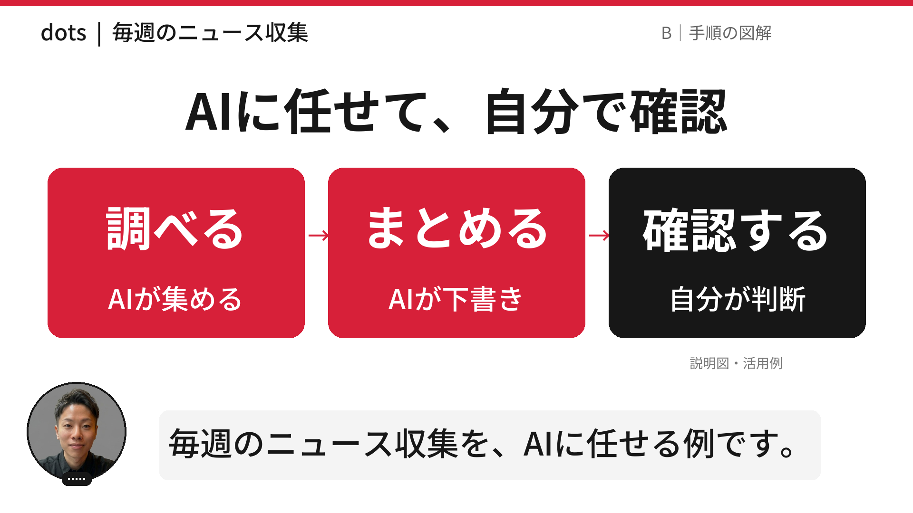
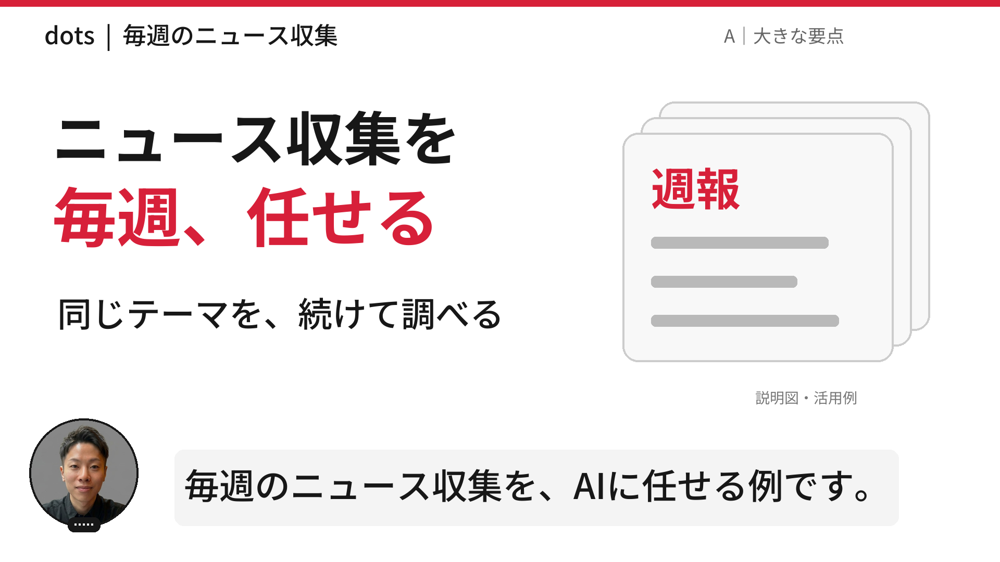
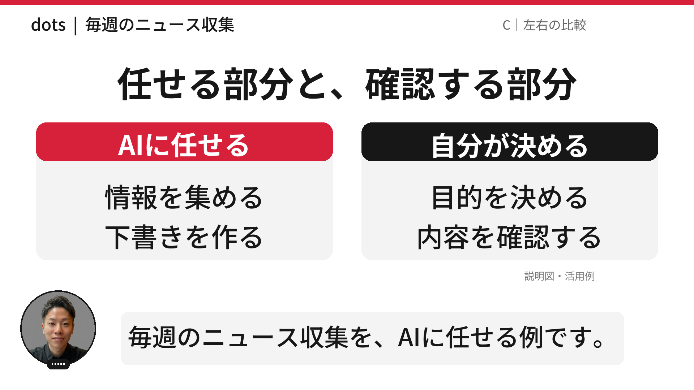
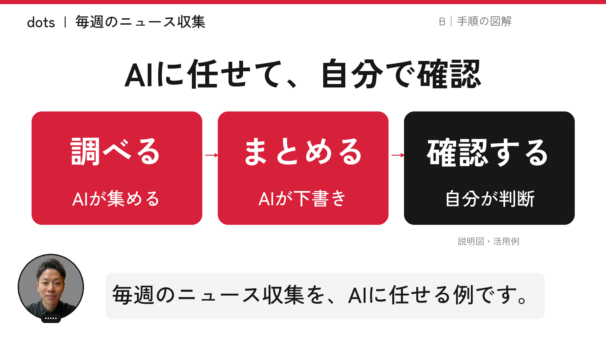
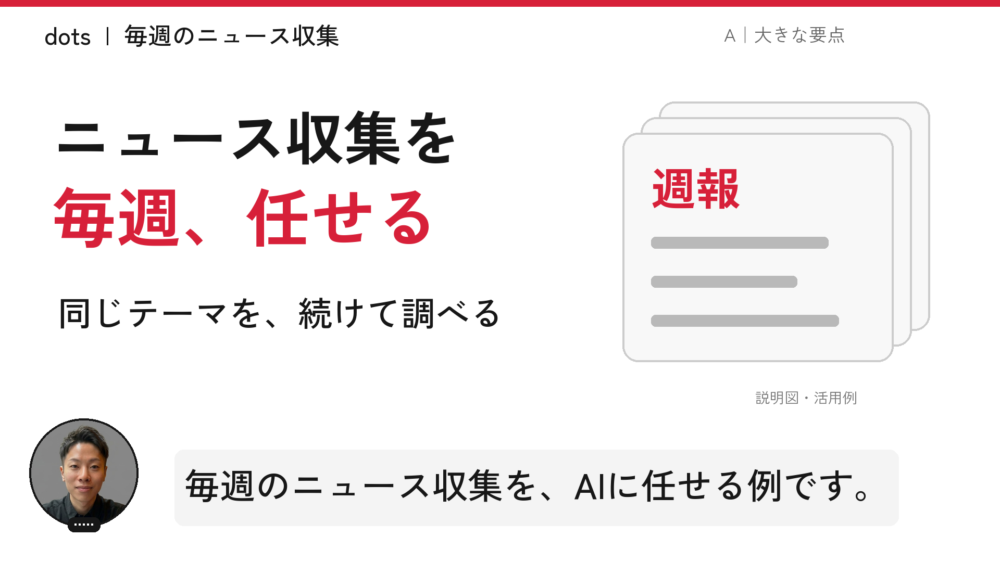
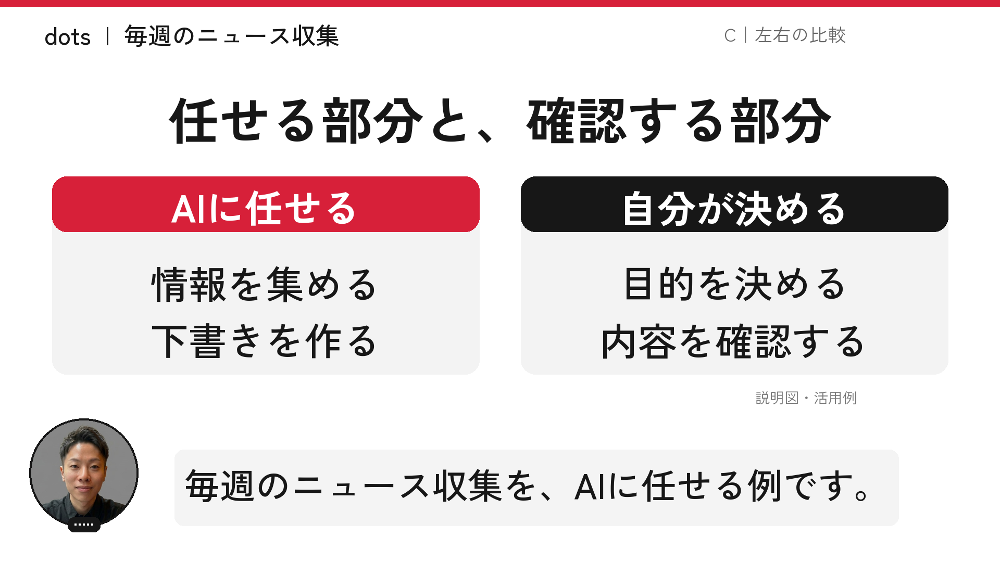
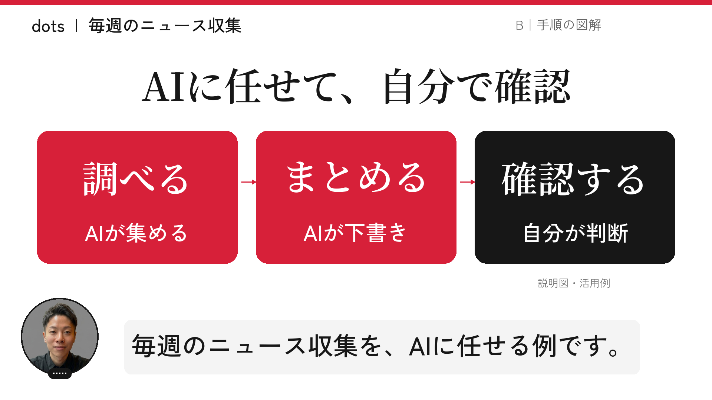
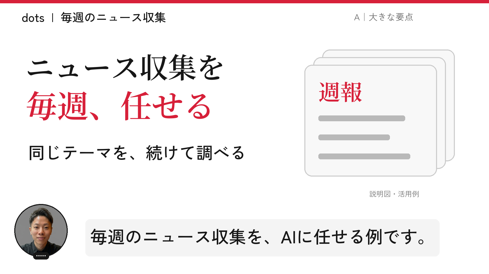
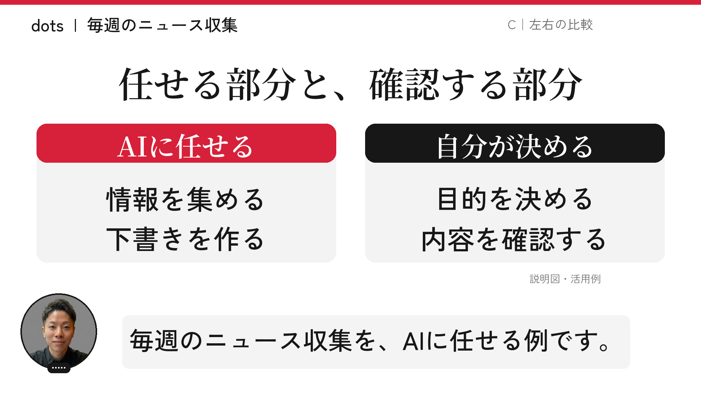
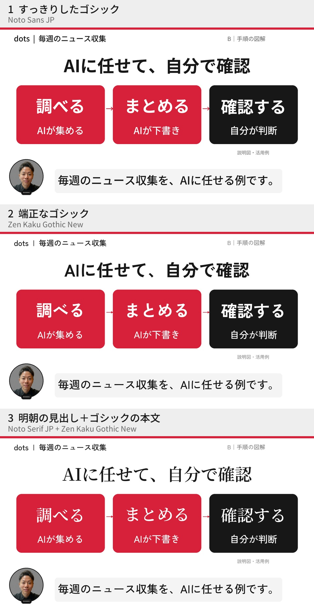

CHIERO / YOUTUBE
図解はそのまま。
書体を3方向で比較。
同じ手順図で、フォントと太さの違いを見比べられます。各案には、採用済みの図解A・B・Cを用意しました。
図解3型は場面ごとに使い分けます。フォントは今回の比較案です。画像をタップすると拡大できます。
1 すっきりしたゴシック
Noto Sans JP
字面をそろえ、見出しと本文の太さを分ける。情報をすっきり見せる案。

タップして原寸で比較 ↗A 大きな要点も見る

タップして原寸 ↗C 左右の比較も見る

タップして原寸 ↗2 端正なゴシック
Zen Kaku Gothic New
見出しは太く、補足は軽く。角ゴシックの中で、端正な印象を目指す案。

タップして原寸で比較 ↗A 大きな要点も見る

タップして原寸 ↗C 左右の比較も見る

タップして原寸 ↗3 明朝の見出し＋ゴシックの本文
Noto Serif JP + Zen Kaku Gothic New
見出しに明朝、本文と字幕はゴシック。落ち着いた解説・考察に向く案。

タップして原寸で比較 ↗A 大きな要点も見る

タップして原寸 ↗C 左右の比較も見る

タップして原寸 ↗図解は、説明する内容で選ぶ。
A 大きな要点：導入・結論・覚えてほしい一言。
B 手順の図解：操作の順番や仕事の流れ。
C 左右の比較：使い分け、注意点、判断。
実画面、短いアイキャッチ、ChatGPTの説明用生成イメージ、図解を組み合わせて、見る順番と説明の流れを整えます。
書体3案の一覧
